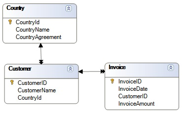
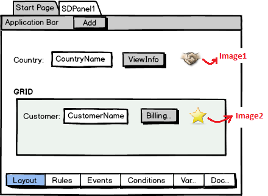
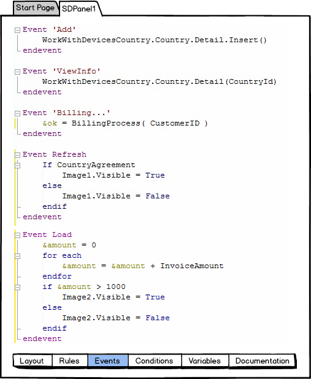

This paper shows how GeneXus determines the tables to browse for information that will be loaded on a panel. For each SD layout (either for a Panel object, or Work With object node -List, Detail or Section-), we have a fixed part (often named Form), and possibly a grid (not considering grids associated with SDTs). If there are attributes in certain places (described below) related to the form, the plain (or fixed) part will have a Base Table. Similarly, if there are attributes in certain places related to grid, there will be a Base table. Each base table is determined independently from one another, and navigations are independent as well (it is similar to having a pair of parallel For Eachs). The attributes involved in determining the Form base table (its fixed part) are:
The attributes involved in determining the grid base table are:
ExampleLet's see, in an example, how each base table is calculated, supposing we have the following relationship among database tables:  We have created a Panel (named SDPanel1), where we want to display the Country received by parameter, and the Customers from that country. To this end, we have defined the following layout:  Rules: parm( in: CountryId); Furthermore, when the country has signed trade agreements, we indicate it by setting image1 as visible. Similarly, if the customer being loaded onto the grid has over 1,000 dollars invoiced, we will want to indicate thisby setting image2 as visible. We have also inserted three buttons: one in the Application Bar ("Add"), one on the form (ViewInfo), and the third one on the grid (Billing...). Each button will have a user event. This is the corresponding Event tab:  Determining form base table: The attributes taken into account are:
So, the form base table is Country. Since panel is receiving the country identifier in the attribute (CountryId), an automatic filter by equal will be specified. Determining grid base table: The attributes taken into account are:
So, the grid base table is Customer. And again, since panel is receiving the country identifier in the attribute (CountryId), an automatic filter by equal will be specified. Note that both navigations are independent, as if they corresponded to two parallel For Eachs. See alsoNative Mobile Applications Events |
| Backlinks |
| Client-side Events in Native Mobile Applications |